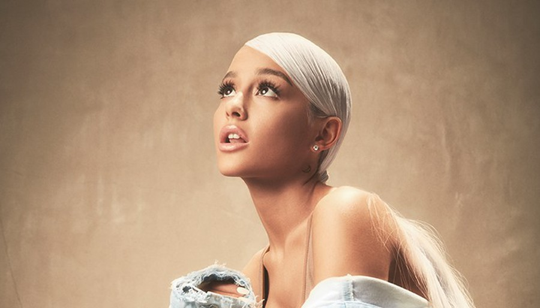
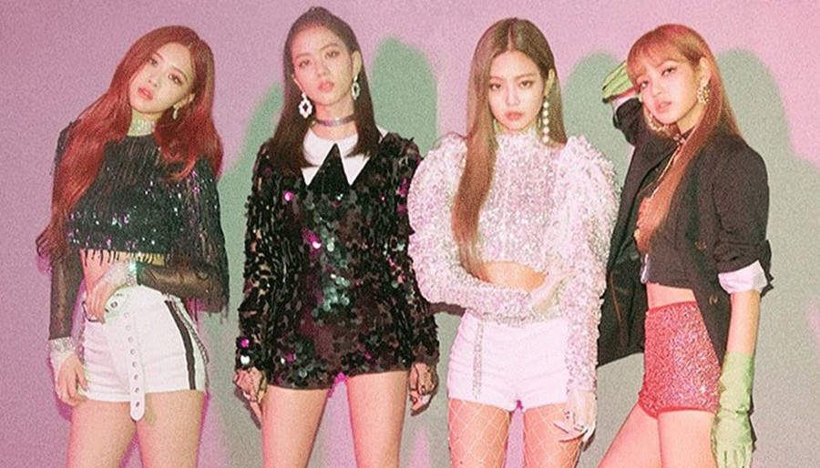

Artists

Ariana Grande

Childish Gambino

The Coachella Valley Music and Arts Festival (commonly referred to as Coachella or the Coachella Festival) is an annual music and arts festival held at the Empire Polo Club in Indio, California, located in the Inland Empire's Coachella Valley in the Colorado Desert. It was co-founded by Paul Tollett and Rick Van Santen in 1999, and is organized by Goldenvoice, a subsidiary of AEG Live.[1] The event features musical artists from many genres of music, including rock, indie, hip hop, and electronic dance music, as well as art installations and sculptures. Across the grounds, several stages continuously host live music. The main stages are the: Coachella Stage, Outdoor Theatre, Gobi Tent, Mojave Tent, and Sahara Tent; a smaller Oasis Dome was used in 2006 and 2011, while a new Yuma stage was introduced in 2013 and a Sonora stage in 2017.
The festival's origins trace back to a 1993 concert that Pearl Jam performed at the Empire Polo Club while boycotting venues controlled by Ticketmaster. The show validated the site's viability for hosting large events, leading to the inaugural Coachella Festival being held over the course of two days in October 1999—just three months after Woodstock '99. After no event was held in 2000, Coachella returned on an annual basis beginning in April 2001, as a single-day event. In 2002, the festival reverted to a two-day format. Coachella was expanded to a third day in 2007 and eventually a second weekend in 2012; it is currently held on consecutive three-day weekends in April, with each weekend having identical lineups. Organizers began permitting spectators to camp on the grounds in 2003, one of several expansions and additions of amenities that have been made in the festival's history.
Coachella showcases popular and established musical artists, as well as emerging artists and reunited groups. Coachella is one of the largest, most famous, and most profitable music festivals in the United States and all over the world.[2][3] Each Coachella staged from 2013 to 2015 set new records for festival attendance and gross revenues. The 2017 festival was attended by 250,000 people and grossed $114.6 million. The success of Coachella led to Goldenvoice establishing two additional music festivals at the site, the classic rock-oriented Desert Trip in 2016, and the annual Stagecoach country music festival in 2007.